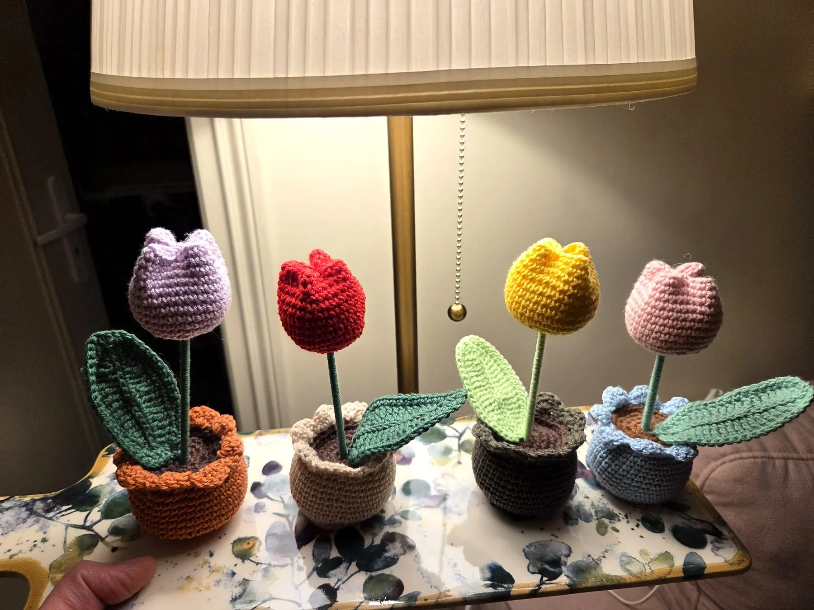

Accueil › Tulipe au crochet en pot

crochetée à la main
Tulipe au crochet en pot
16 €Une tulipe qui ne fane pas, avec sa tige gainée, ses feuilles travaillées et son petit pot festonné. Posée sur un bureau ou une étagère, elle apporte une touche de printemps toute l'année. Chaque pièce est unique et crochetée à la commande.
- Hauteurenviron 16 cm
- Matièrefil de coton
- Fabricationréalisé à la commande, expédié sous 1 semaine
- Entretienaucun arrosage, dépoussiérer délicatement
Vous décidez des couleurs. Choisissez la couleur de la fleur et celle du pot : Catherine crochète votre tulipe à la commande. Une autre couleur en tête ? Précisez-la dans la note du panier.
une idée de cadeau
Une petite attention qui reste
Anniversaire, fête des mères, remerciement ou simple envie de faire plaisir : une tulipe en pot se glisse partout et ne demande rien. Vous pouvez en commander plusieurs, dans des couleurs différentes, pour composer un joli petit jardin.
Vous avez une couleur précise en tête, qui n'est pas dans la liste ? Notez-la dans votre panier, Catherine vous répondra si elle peut la réaliser.
Comment ça se passe